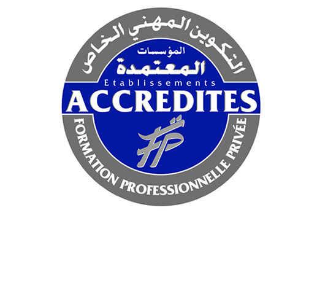

Accueil › L'Institut
Qui sommes-nous
L'Institut Galien
— votre tremplin en santé
Fondé en 2002 à Agadir, l'Institut Galien est le 1er établissement privé accrédité du Maroc dans le secteur paramédical. Depuis plus de 25 ans, nous formons des professionnels compétents, humains et immédiatement opérationnels.
Un enseignement dispensé par des praticiens en exercice, des équipements de simulation clinique modernes, des stages en milieu hospitalier réel et un accompagnement personnalisé jusqu'à l'emploi.
25+Ans d'expérience
2500+Diplômés formés
95%Taux d'insertion
7Filières disponibles

2002Fondé en